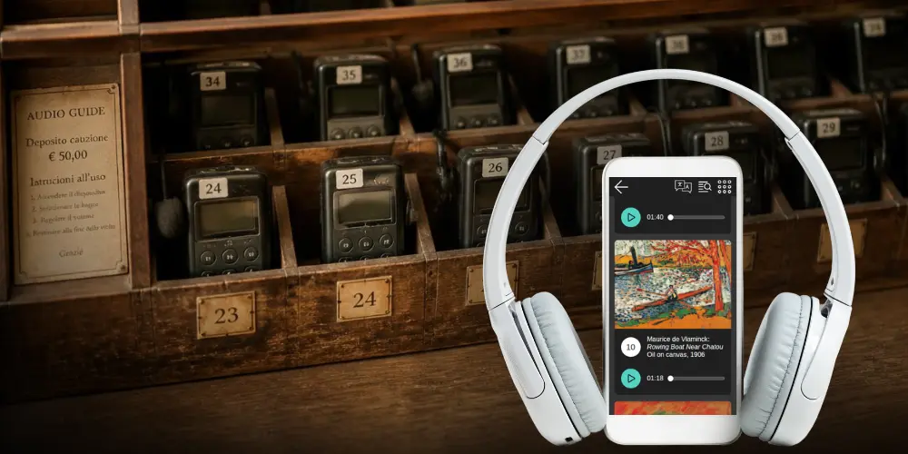
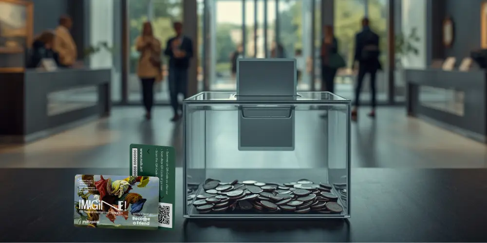

Rosa Sala
CEO of Nubart
Revenue share for museum audio guides: how it works with Nubart GUIDE

Museums that want a complete audio guide, with content produced if needed, can obtain one with little or no money upfront through a revenue-share model. With Nubart GUIDE, the museum sells visitors a non-transferable QR code card, which gives them access to the digital audio guide, as an optional extra. Nubart pays for the initial setup and the cards, and if necessary, the content production. Nubart then receives an agreed fee for each card that a visitor activates. The museum sets the visitor price up to an agreed maximum and keeps the difference.
Revenue sharing is one of the two ways to use Nubart GUIDE. Alternatively, museums can purchase the cards outright under our standard terms, without entering into a revenue-share agreement — most of our customers opt for this option.
Our article on the history of revenue share explains why this model almost disappeared when audio guides moved to smartphones, and how a non-transferable QR code makes it work again. A non-transferable code is worthless if it is forwarded, so one sale does not turn into many free listeners. This article covers the practical side: how the partnership works day to day, who invests what, and what we ask from the museum in return.
The basic principle: an agreed fee per activated card
In the days of rented devices, the provider would usually take a percentage of what visitors paid for the guide. Nubart works differently. Before a project begins, Nubart and the museum agree on the fee for each activated card and the maximum price that the museum can charge visitors. The museum then sets its own price up to this maximum, and keeps whatever it charges above Nubart's fee.
This has three practical effects. Firstly, the museum knows what every sale costs, regardless of the price it sets. Secondly, its costs follow its sales: we invoice at regular intervals, usually monthly, for the cards activated during that period at the agreed fee. Thirdly, the invoice is easy to check, because the museum can see at any time in its customer area how many cards have been activated and therefore used.
This article is about the voluntary model, where the guide is an optional extra and only some visitors buy it. In the universal model, the guide is included in the admission price and every visitor gets a card. Both models are described in our article on how to monetise a museum audio guide.
How it works, step by step
- 1 · NubartShips the cardsThey stay Nubart's property until a visitor receives one.
- 2 · MuseumSells the cardAt the ticket desk, or online together with admission.
- 3 · VisitorScans and activatesFrom then on the card works for its owner.This is what we bill
- 4 · NubartBills activated cardsThe museum can check the counts in the portal.
- We set up the guide. Nubart GUIDE is a progressive web app (PWA), so the audio tour runs in the phone's browser, in all the agreed languages. Visitors scan the QR code and listen. They do not download an app and they do not register.
- We deliver the cards. The cards carry the museum's design and an individual QR code. They stay Nubart's property until a visitor receives one, so the museum does not buy them.
- The museum sells the cards. Staff offer them at the ticket desk, or wherever visitors pay for admission. If the museum sells tickets online, the same kind of code can be issued digitally at checkout.
- The visitor scans the card. The first scan activates it. From then on the card works for its owner, during the visit and afterwards, as often as they like. If the code is forwarded, it is worthless to whoever receives it. This is what our patented LWAC technology does.
- We bill only what was used. Each activated card is billed once, however often its owner comes back to the guide. Cards that are never activated are never billed. The museum does not commit to buying any number of cards.
- We look after stock and data. We watch usage and send new cards before stock runs low, so the museum does not have to reorder. In a password-protected portal, the museum can see how many cards were activated, month by month. This is the same data we use for the invoice. The museum also gets the visitor statistics that come with every Nubart GUIDE project, such as which languages visitors choose and how long they listen. Our article on revenue-share history explains why a shared record like this matters in these agreements.
Who invests what: the museum pays little or nothing upfront
In a revenue-share partnership, most of the upfront investment is ours. We print and ship the cards, set up and host the guide and, if needed, produce the content. We pay for all of this first and recover it gradually, through the fee on each activated card.
The museum invests little or no money upfront. Where we agree an advance payment at signature, it is credited against the first invoices, so it is not an extra cost. What the museum does invest is attention: space at the desk, a short training for ticket staff, and the habit of offering the guide to every visitor. In our experience, this decides whether a project works.
Because we pay first, a revenue-share partnership is a multi-year agreement. The term has to be long enough for us to recover our investment at a realistic number of sales.
Before launch
NubartPrints the cards, sets up and hosts the guide, and produces the content if needed.
MuseumSupplies the scripts or existing content and briefs the ticket staff.
While the guide runs
NubartSends new cards before stock runs low and bills each activated card once.
MuseumOffers the guide at every ticket desk and sells cards up to the agreed maximum price.
After our investment is recovered
NubartKeeps running and hosting the guide until the agreed term ends.
MuseumReceives a free right to use the recordings Nubart produced, also after the contract ends.
Content: the museum supplies it, or Nubart produces it
The museum already has content
Many museums already have recordings or scripts from older device-based guides or free apps, for example. If the museum holds the rights to this content, we can move it to Nubart GUIDE. The museum remains the owner and we will only use the content to run the guide during our partnership.
Nubart produces the content
If there is no audio tour yet, we can produce one based on scripts approved by the museum. This would cover translation, voice-over and audio editing. In a revenue-share partnership, we also pay for this production upfront. The museum receives no separate bill for this, as we recover the cost through the fee charged for activated cards.
Once we have recovered the production investment, the museum will have the right to use the recordings for its own purposes free of charge and without time limit. The contract defines when this point is reached, and each invoice shows how much of the investment remains.
Additional languages, stops, or temporary exhibitions can be added later. These are normally ordered and priced separately, so they do not increase the original investment.
How revenue share compares with other models
Audio guides have been shared-revenue businesses in several forms. This table compares the three we meet most often.
| Aspect | Rented devices | QR guide with a payment step | Nubart GUIDE |
|---|---|---|---|
| Where the visitor pays | At the rental counter | On their own phone, after scanning | At the ticket desk or online, together with admission |
| How the provider is paid | Typically a percentage of each rental | Often a percentage of the payments | An agreed fee per activated card |
| Who sets the visitor price | Usually agreed in the contract | Often the provider | The museum, up to an agreed maximum |
| How sales are counted | The operator's own records | The payment processor's records | The museum can check the activation counts used for billing |
| What the museum provides | Floor space for a counter | Often nothing | Active selling at the desk |
| Main weakness | Staff and device costs, and sales that are hard to check | Visitors must pay after scanning, which adds a step | Depends on staff offering the guide |
What we ask from the museum
Because we are making most of the investment, we ask the museum to make a few commitments.
The first is to make the guide available to every visitor at every ticket desk and, if there is one, in the online shop. Providing ticket staff with a short instruction is usually enough.
The second commitment is to sell the cards and not give them away. Exceptions, for example for school groups, can be agreed in advance. Every activated card will be billed, even if it was handed out for free under an exception.
The third is to keep the visitor price at or below the agreed maximum. Price has a strong effect on how many visitors buy. In our installations, sales tend to fall as the price rises. Our article on monetising a museum audio guide has a calculator that shows how price and sales move together.
The fourth is to run one digital audio guide for the visit. During the partnership, the museum does not provide a competing guide for the same visit, such as a free app, a website guide or rented devices. As we pay for the project upfront, we need the museum's visitors to use our guide. General information on the website, tours led by staff, signs, text panels, and short accessibility audio that does not constitute a full tour are not affected.
The last is a multi-year term.
When the model fits, and when it does not
The voluntary revenue-share model works best for museums that have a ticket desk or reception where staff can speak to every visitor. It is also suitable for museums that want to earn revenue from guides instead of paying for them, and that prefer to sell them as optional extras rather than include them in ticket prices.
Visitor numbers are important, too. If we have to produce the content and recover the production cost through the fee, the museum needs to attract plenty of visitors. However, if the museum already has the content, the model can work for smaller museums as well.
This model is more difficult to implement in museums with free admission and no till. If staff are not permitted to make sales, there is no natural opportunity to offer the card. Some free-admission museums solve this by having a reception desk where every visitor collects a free ticket, which is often sufficient. Without such a point of contact, another model is usually a better choice.
If the museum wants to provide a guide for every visitor, the universal model, where the guide is included in the admission fee, is a better fit. Alternatively, if the museum prefers to purchase the cards outright and retain the full margin, it can do so without entering into a revenue-sharing agreement. Both options are described in our article on monetising a museum audio guide.
A note for public museums
A revenue-share partnership is still a contract, and public museums are usually bound by procurement rules. Whether a direct award is possible depends on the country, the type of institution, and the expected total value. Our model does not eliminate the need to adhere to these regulations. Where a tender is required, however, we can participate and explain how the model works, including the use of individual activation codes, billing by activation and verifiable usage records.
If you want to know whether a revenue-share partnership could work for your museum, tell us how many visitors you have, how they enter, and whether you already have audio content. Those three answers are usually enough for us to tell you whether a Nubart GUIDE revenue-share partnership looks commercially viable for your museum.
See it for your museum — order a free sample card to try the experience yourself.
We hope you found this article useful. Subscribe to our newsletter so you don't miss any of our posts.
You may also be interested in
Revenue share for audio guides: an old model, back for the smartphone era
How revenue share worked in the device era, why digitization broke it, and how non-transferable QR codes make the old economics viable again.

How museums monetise a QR-code audio guide
A QR code can be shared endlessly, so a public link cannot be sold. How Nubart's patented LWAC makes a card non-transferable — with real take-up data and a break-even calculator.